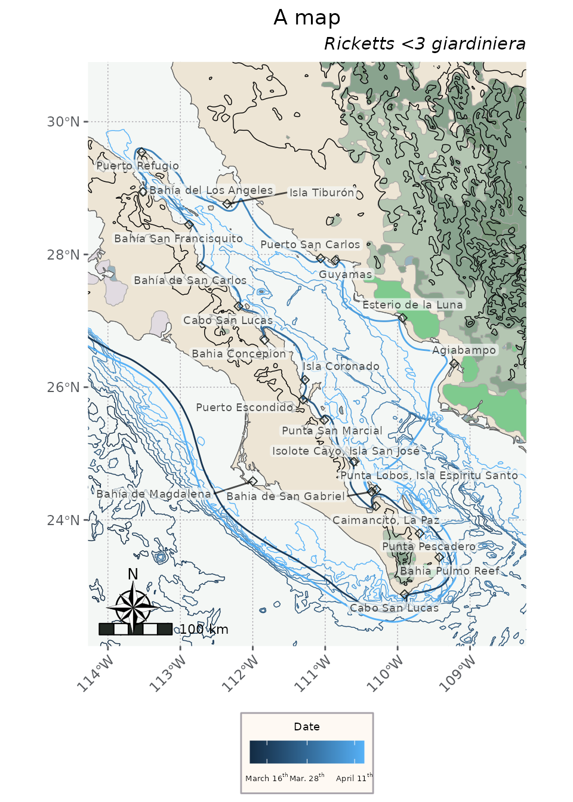
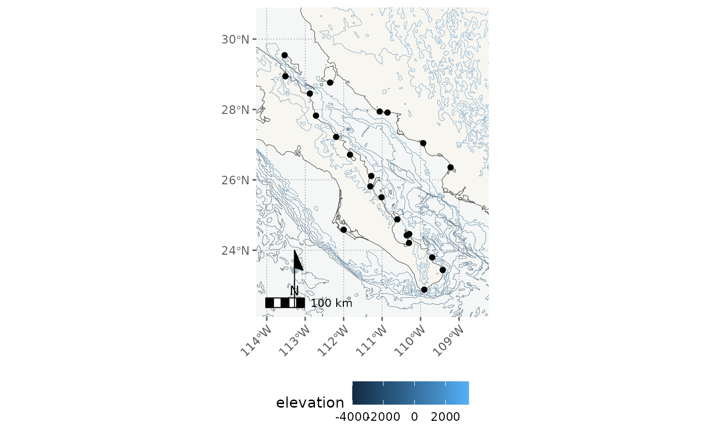

Exploring the data sets
ExploreDataSets.RmdIntroduction and quick start
flyer is available on github, and should go to CRAN sometime. It can be installed via either of the following commands.
install.packages('devtools')
devtools::install_github('sagesteppe/flyer')
# remotes is very similar and a good alternative for this use case.
install.packages('remotes')
remotes::install_github('sagesteppe/flyer')To explore the data we will load a couple packages for interacting with the data (sf, dplyr), and a whole slew of packages for plotting the data using ggplot2 (ggnewscale, ggrepel). It might seem onerous to be installing all of these packages, but I bet once you see what they do you’ll be quite excited to have them.
library(flyer)
library(dplyr) # for general data handling
#>
#> Attaching package: 'dplyr'
#> The following objects are masked from 'package:stats':
#>
#> filter, lag
#> The following objects are masked from 'package:base':
#>
#> intersect, setdiff, setequal, union
library(sf) # for spatial data
#> Linking to GEOS 3.12.1, GDAL 3.8.4, PROJ 9.4.0; sf_use_s2() is TRUE
library(ggplot2) # all for plotting the data
library(ggnewscale) # for mapping multiple variables to an aesthetic.
library(ggrepel) # for text based labels which move to minimize overlaps.
library(ggspatial) # compasses and scale bars. We’ll modify the number of graticules right off the bat, note that
the pretty function does not always return the requested
n, so…
graticNo <- function(polygon, nx, ny){
bb <- round(st_bbox(polygon), 1)
if(all(missing(nx) & missing(ny))) {nx <- 5;ny <- 5} else {
if(all(missing(nx) & ! missing(ny))) {nx <- ny} else {
if(all(missing(ny) & ! missing(nx))) {ny <- nx}
}
}
xbreaks <- pretty(seq(bb[1], bb[3], length.out = nx), nx)
ybreaks <- pretty(seq(bb[2], bb[4], length.out = ny), ny)
return(
list(
x = xbreaks, y = ybreaks
)
)
}
brks <- graticNo(polygon = places, nx = 4, ny = 5)the data sets
The places visited by the collectors can be loaded using
places, and the route they took can be loaded via
routes. These are really the whole point of the package!
And spoiler alert… are very simple!
But before we pull up places and routes
let’s pull up the land data set so we have some context to
plot them on.
land
We can read in some polygons which depict land from
Natural Earth, from the rnaturalearth package;
note that I love this packages functionality, even if I get real
forgetful of their API calls (theme argument?). Anyways, we have duped
the natural earth land surfaces into this package - but there are ton’s
of other products you may want to use from there, check out the R
Open Sci page for more info.
head(land)
#> Simple feature collection with 2 features and 1 field
#> Geometry type: MULTIPOLYGON
#> Dimension: XY
#> Bounding box: xmin: -120.8977 ymin: 19 xmax: -103 ymax: 35.30912
#> Geodetic CRS: WGS 84
#> # A tibble: 2 × 2
#> name geometry
#> <chr> <MULTIPOLYGON [°]>
#> 1 Mexico (((-113.0957 29.0635, -113.0897 29.06302, -113.0823 …
#> 2 United States of America (((-119.3816 34.01122, -119.3923 34.00631, -119.4113…
ggplot() +
geom_sf(data = land, fill = '#F0E7D8') +
theme_minimal()
For playing around with the data today, I don’t want the different countries to be drawn separately so we can union them.
land <- st_union(land)
m <- ggplot() +
geom_sf(data = land, fill = '#F0E7D8') +
theme_minimal()places
data(places)
head(places)
#> Simple feature collection with 6 features and 6 fields
#> Geometry type: POINT
#> Dimension: XY
#> Bounding box: xmin: -121.8926 ymin: 22.88 xmax: -109.4243 ymax: 36.6046
#> Geodetic CRS: WGS 84
#> location_espanol location_english collect real_site date_arrive
#> 1 Monterey Monterey FALSE NA 1940-03-01
#> 2 Santa Barbara Channel Santa Barbara Channel FALSE NA 1940-03-12
#> 3 San Diego San Diego FALSE NA 1940-03-13
#> 4 Bahía de Magdalena Magdalena Bay FALSE NA 1940-03-16
#> 5 Cabo San Lucas Cape San Lucas TRUE TRUE 1940-03-17
#> 6 Bahia Pulmo Reef Cabo Pulmo TRUE FALSE 1940-03-19
#> date_depart geometry
#> 1 1940-03-11 POINT (-121.8926 36.6046)
#> 2 1940-03-12 POINT (-119.8717 34.26107)
#> 3 1940-03-14 POINT (-117.1852 32.71662)
#> 4 1940-03-16 POINT (-111.9988 24.58293)
#> 5 1940-03-18 POINT (-109.903 22.88)
#> 6 1940-03-18 POINT (-109.4243 23.43779)
m <- m +
geom_sf(data = places)
m
The places seem like they will be better treated as text labels - we
can apply them with ggrepel::geom_text_repel which will
move them to avoid conflicts with other plot elements.
m <- m +
ggrepel::geom_text_repel(
data = places,
aes(label = location_espanol, geometry = geometry),
stat = "sf_coordinates",
size = 2.5
) +
# now let's add in our customized graticules too.
scale_x_continuous('Longitude', breaks = brks$x) +
scale_y_continuous('Latitude', breaks = brks$y) +
theme_minimal()
m
Also, because the package is attached we can also just start using
the data, which is currently held as a promise. In other words we don’t
need to call data(object) on the data sets, we can just use
them directly - such as viewing them by calling
head(object). We are going to use this direct approach for
the remainder of the vignette.
route
head(route)
#> Simple feature collection with 6 features and 1 field
#> Geometry type: LINESTRING
#> Dimension: XY
#> Bounding box: xmin: -113.4777 ymin: 22.60915 xmax: -109.2605 ymax: 28.99745
#> Geodetic CRS: WGS 84
#> # A tibble: 6 × 2
#> destination geometry
#> <chr> <LINESTRING [°]>
#> 1 Agiabampo (-109.98 27.00303, -109.9776 26.99705, -109.9767…
#> 2 Amatorajada, San José Island (-110.3415 24.19858, -110.342 24.18917, -110.344…
#> 3 Angeles Bay (-112.8615 28.47699, -112.8717 28.48583, -112.88…
#> 4 Cabo Pulmo (-109.8743 22.86407, -109.8674 22.86868, -109.85…
#> 5 Caimancito, La Paz (-110.2735 24.38412, -110.2872 24.38077, -110.30…
#> 6 Cape San Lucas (-112.5084 24.37574, -112.4991 24.3553, -112.489…
route <- left_join(
route,
st_drop_geometry(places),
by = c('destination' = 'location_english')
) |>
relocate(geometry, .after = last_col())The route object itself is pretty minimal, but relevant attributes can be brought in by joining it to places.
head(route)
#> Simple feature collection with 6 features and 6 fields
#> Geometry type: LINESTRING
#> Dimension: XY
#> Bounding box: xmin: -113.4777 ymin: 22.60915 xmax: -109.2605 ymax: 28.99745
#> Geodetic CRS: WGS 84
#> # A tibble: 6 × 7
#> destination location_espanol collect real_site date_arrive date_depart
#> <chr> <chr> <lgl> <lgl> <date> <date>
#> 1 Agiabampo Agiabampo TRUE FALSE 1940-04-11 1940-04-11
#> 2 Amatorajada, San J… Isolote Cayo, I… FALSE TRUE 1940-03-23 1940-03-23
#> 3 Angeles Bay Bahía del Los A… TRUE FALSE 1940-04-01 1940-04-01
#> 4 Cabo Pulmo Bahia Pulmo Reef TRUE FALSE 1940-03-19 1940-03-18
#> 5 Caimancito, La Paz Caimancito, La … TRUE TRUE 1940-03-21 1940-03-22
#> 6 Cape San Lucas Cabo San Lucas TRUE TRUE 1940-03-17 1940-03-18
#> # ℹ 1 more variable: geometry <LINESTRING [°]>By default ggplot2 does not seem to order date variables the way I would. We can convert the dates to factor to enforce data to be plotted in actual order.

While some of the data for the start end of the trip is included, such as an entry when they are near Santa Barbara and that they started and returned to Monterey, most all data focuses on the Gulf of Mexico. Basically, too much data would make the package too cumbersome to fit on CRAN. In my mind the maximum map area reaches San Diego in the North
bb <- st_bbox(
c(xmin = -114, xmax = -108.5, ymin = 22.5, ymax = 30.5),
crs = st_crs(4326)
)
# we have to crop the places data set or ggrepel will move places outside the
# coord_sf down into the plot anyways
places <- st_crop(places, bb)
#> Warning: attribute variables are assumed to be spatially constant throughout
#> all geometries
m <- ggplot() +
geom_sf(data = land, fill = '#F0E7D8') +
theme_minimal() +
coord_sf(xlim = c(bb[1], bb[3]), ylim = c(bb[2], bb[4]))
m
Now let’s add some topography to make the land seem more natural. We’ll also ignore the administrative borders.
Note that we are going to go back to the drawing board to control the order which layers are added to the map. We’ll still overwrite the variable m.
plot(topography)
m <- ggplot() +
geom_sf(data = land, fill = '#F0E7D8') +
geom_sf(data = topography, lwd = 0.1) +
geom_sf(data = route, aes(color = date_arrive)) +
coord_sf(xlim = c(bb[1], bb[3]), ylim = c(bb[2], bb[4])) +
ggrepel::geom_label_repel(
data = places,
aes(label = location_espanol, geometry = geometry),
stat = "sf_coordinates",
alpha = 0.9,
label.padding = 0.1,
size = 1.5
) +
# now let's add in our customized graticules too.
scale_x_continuous('Longitude', breaks = brks$x) +
scale_y_continuous('Latitude', breaks = brks$y) +
theme_linedraw()
m
#> Warning in st_point_on_surface.sfc(sf::st_zm(x)): st_point_on_surface may not
#> give correct results for longitude/latitude data
We can plot the bathymetry data like this.
ggplot() +
geom_sf(data = land, fill = '#F0E7D8') +
geom_sf(data = bathymetry, aes(color = elevation), lwd = 0.4) +
theme_minimal() +
coord_sf(xlim = c(bb[1], bb[3]), ylim = c(bb[2], bb[4]))And obviously we can rename it something like depth… :)
On the other hand, the same scale can be used for topography and bathymetry together like this… I will use a divergent scale which makes sense to me… I could see another very cool interpretation of using a continuous and counting everything from 0 at 4300 feet and adding the difference to the ‘topography’ data set. Or, and much to my liking, we can convert the polylines of bathymetry to polygons, and use them to color the whole ocean! With darker areas being deeper hues of blue.
head(bathymetry)
#> Simple feature collection with 6 features and 1 field
#> Geometry type: LINESTRING
#> Dimension: XY
#> Bounding box: xmin: -121 ymin: 19.59502 xmax: -117.0035 ymax: 31.94066
#> Geodetic CRS: WGS 84
#> elevation geometry
#> 1 -4000 LINESTRING (-121 31.91037, ...
#> 1.1 -4000 LINESTRING (-121 29.55895, ...
#> 1.2 -4000 LINESTRING (-121 26.51376, ...
#> 1.3 -4000 LINESTRING (-121 27.20785, ...
#> 1.4 -4000 LINESTRING (-121 21.41284, ...
#> 1.5 -4000 LINESTRING (-121 21.86726, ...
plot(bathymetry)
ggplot() +
geom_sf(data = land, fill = '#F0E7D8') +
geom_sf(data = bathymetry, aes(color = elevation), lwd = 0.4) +
geom_sf(data = topography, aes(color = elevation), lwd = 0.4) +
scale_color_distiller(palette = "Spectral") +
ggnewscale::new_scale_color() +
geom_sf(data = places) +
geom_sf(data = route, aes(color = date_arrive)) +
theme_minimal() +
coord_sf(xlim = c(bb[1], bb[3]), ylim = c(bb[2], bb[4]))
tangential data
While some of the last data sets are loosely related to the book, these two are… not at all related, but can be useful for cartography.
A simple landcover classification data set is available as
landcover. We also include some quick colors to help with
mapping these classes.
ggplot() +
geom_sf(data = landcover, aes(fill = class)) +
scale_fill_manual(values = lc_pal) +
theme_minimal()Additionally, information on protected areas of Mexico are also included.
ggplot() +
geom_sf(data = land, fill = '#F0E7D8') +
geom_sf(
data = protected,
aes(color = reserve_type, fill = reserve_type),
alpha = 0.4) +
ggrepel::geom_text_repel(
data = protected,
aes(label = name, geometry = geometry),
stat = "sf_coordinates",
size = 1.5
) +
theme_minimal()
#> Warning in st_point_on_surface.sfc(sf::st_zm(x)): st_point_on_surface may not
#> give correct results for longitude/latitude data
#> Warning: ggrepel: 10 unlabeled data points (too many overlaps). Consider
#> increasing max.overlaps
putting it all together
We can make an OK map using some of the details below.
ggplot() +
geom_sf(data = land, fill = '#F0E7D8') +
geom_sf(data = bathymetry, aes(color = elevation), lwd = 0.1) +
geom_sf(data = topography, aes(color = elevation), lwd = 0.1) +
geom_sf(data = places) +
# geom_sf(data = route, aes(color = date_arrive)) +
coord_sf(xlim = c(bb[1], bb[3]), ylim = c(bb[2], bb[4]), crs = 4326) +
annotation_scale() +
annotation_north_arrow(which_north = "true", style = north_arrow_minimal) +
theme_minimal() 